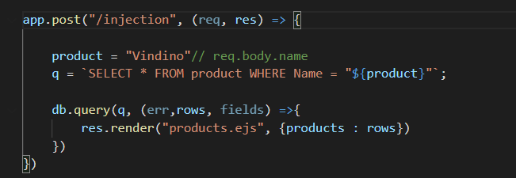

Može li se pristupiti WebSQL bazi sa app.post endpointa u Node.js-u?
Imam bazu var db = openDatabase('mydb', '1.0', 'TestDB', 2 * 1024 * 1024);
koju stvaram ejs file-u. Tamo ju lijepo popunim i sve što treba.
Dalje u aplikaciji pozivam endpoint [POST] injection dobivam db is not defined…
